1.1.4.1. Outline
For some reason the motor's power supply to AMP has been shut down. Main examines the safety signals in order find the reason of the motor's power shut down. If no reason is found, this message will be displayed.
Following diagram shows compositions of various safety signals that can shut down the motor's power. Main periodically examines the ON/OFF status of those safety signals. If a momentary contact malfunction occurs between the periods, main will not be able to detect it and displays this message instead.
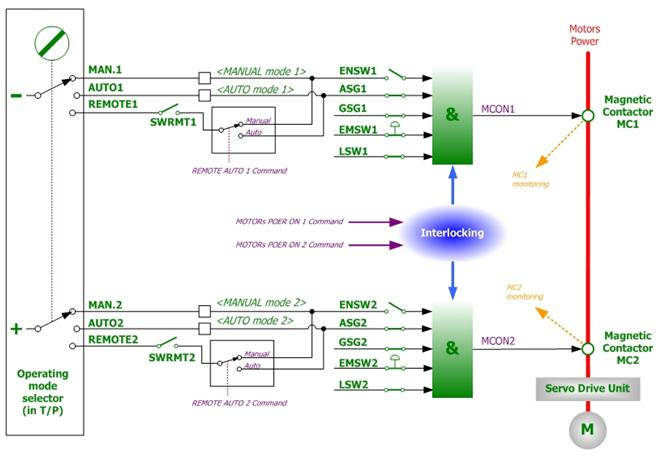
Figure 1.14 Concept Diagram of Safety Circuit for Motor's Power ON/OFF
1.1.4.2. Causes and checking methods
|
(1) Please check the status of DC 24V (P1-M1) power and cables
(2) Please check if there is a problem with CPUERR, EXOUT signals
(3) Please check the safety switch and signal wirings
(4) Please check the System Board, Electrical Module |
(1) Please check the status of DC 24V (P1-M1) power and cables.
Please check if the System Board is being supplied with DC 24V control power (P1, M1) properly. This error can be caused if there is a problem with the power as it will affect the safety sequence of the System Board. Power is to be supplied by SMPS's CN6 Connector-System Board CNP2 Connector. Please check if the power level is varying or is there any problem with the cable.
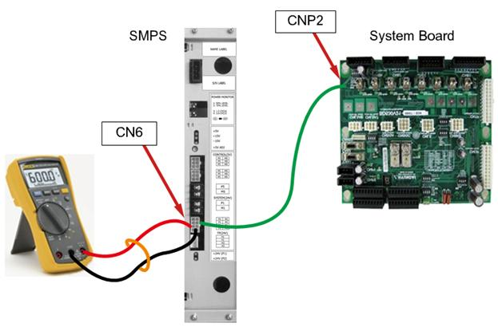
Figure 1.15 Method of Connecting DC24V Power and Measuring Voltage of the System Board (BD530)
(2) Please check if there is a problem with CPUERR, EXOUT signals
Main board generates CPUERR or EXOUT signals in a case when systemic error has occurred (e.g. power shut down, Servo error). This signal will be transferred to the System Board and block the motor on command in terms of hardware. Motor's power will be immediately shut down for a safety reason. However, these signals may be generated abnormally, and it will shut down the motor's power.
n How to judge:
System Board's 7-segment index may give you an indication of the situation.7-segment displays "H" when CPUERR is being transmitted to the System Board. Also the CPUERR, EXOUT LED which located at the center of the System Board indicate the error situation (figure 6.21) These LED lights will be on if it is a normal status, and the lights will be off if it is not.
However if the signal appears time to time for a very short moments, 7-segment and LED won't be able to indicate it. In such case, error occurrence must be observed while ignoring the two signals by using DIP switch SW1. Method to ignore the signal is to, as shown in the figure 6.21, turn on the No 1(to ignore CPUERR) and the No 2 (to ignore EXOUT) of the DIP switch SW1. At this point all LED lights will be on.
If the error no longer persists after the system restart, main board generated these signals or CANS1 Connector/Cable malfunction is suspected.
Figure 1.16 Location 7-SEG, LED and DIP Switch (CPUERR error related) on a System Board
n Actions:
If a Main Board generating this signal without any other indication of errors, please check the PLD version of the Main Board. Over V0.7 is normal. If main board's PLD version is normal, please examine the CANS1 connector and cables.
(3) Please check the safety switch and signal wirings.
Safety switch input may goes OFF for a short moment which cannot be detected by the Main Board for following reasons.
n Switch malfunction
n Wiring malfunction: Exposure or damage on a cable
n Wirings installation problem:
Separated distance between power lines, cables that consume a large amount of electric power must be greater than 10CM. Alternatively electrical shielding by using a metal marital plates are required.
Available safety switches are as below, and they can be connected through a System Board. Please check the above for the safety switches that are being used.
|
Types |
Connecting method |
Disabling method |
|
Emergency stop switch(External) –point of contact type |
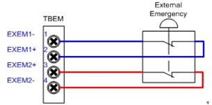 |
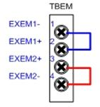 |
|
Emergency stop switch(External)-semiconductor type |
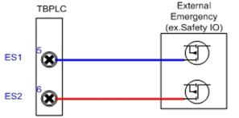 |
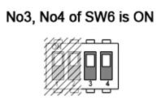 |
|
Safety guard (Auto)-point of contact type |
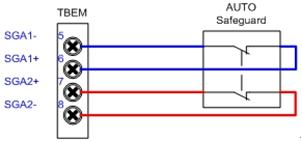 |
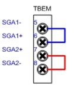 |
|
Safety guard (Auto)-semiconductor type |
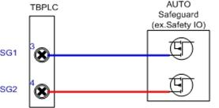 |
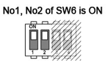 |
|
Safety guard (General) |
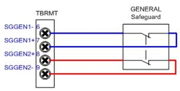 |
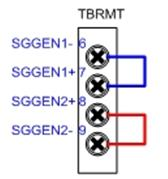 |
Other switches that are related to a safety and system operation which may effect to this error are as below.
|
Types |
Connecting method |
Disabling method |
|
Enabling switch (TP) |
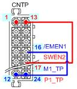 |
|
|
Remote mode input |
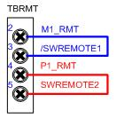 |
|
|
Limit switch |
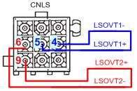 |
|
|
Arm interference switch |
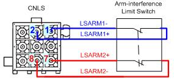 |
No1,No2 of SW5 is ON 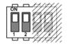 |
|
Emergency stop switch (TP) |
System Board – Wiring between Teach Pendants |
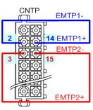 |
|
Emergency stop switch (OP) |
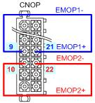 |
(4) Please check the System Board, Electrical Module.
n Cabling (wires, connector etc.) malfunction
Please check the cabling between the Electrical Module (PSM or PDM) that an electrical connector is installed and the System Board (BD530) that collects monitoring signals.
The cable name is CNMS and it enters to the Electrical Module through the top rear of the System Board (figure 1.17). Please check the connection status of this cable's connector.
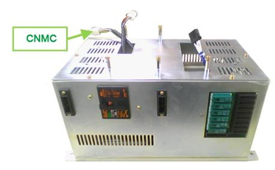
Figure 1.17 CNMC Cable on the Electrical Module
Input signal processing unit malfunction from the inside of System Board can be a cause of this error. Please replace the System Board and examine it.
n Electrical Module malfunction
Internal electrical module malfunction can be categorized as a electrical board (BD5C2 or BD5C0), Electrical connector (MC1, MC2), and wirings between the electrical board and the electrical connector. However it is difficult to examine the inside of Electrical Module in a field where a Robot has already been installed, so alternatively please replace the Electrical Module.
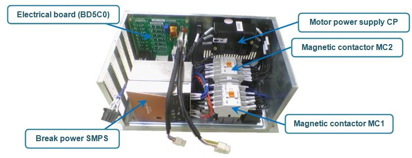
Figure 1.18 Inner Structure of Electrical Module
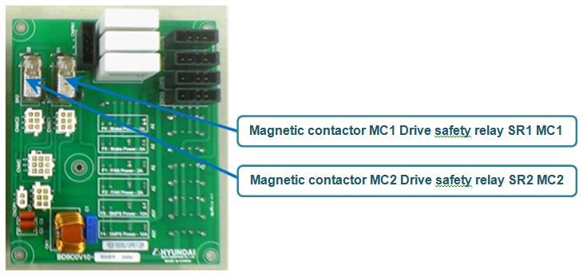
Figure 1.19 Electrical board